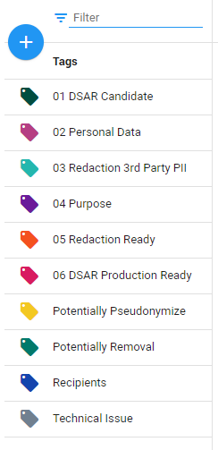

Once the Keyword Highlighting rules have been added, the user can add potential tags which can help sort the documents. When handling a data subject access request, it is essential to search through a lot of data and filter the relevant documents. The tag functionality helps the user sort the documents based on their relevance.
Tags can be used to determine whether there are any special category personal data in the documents. If that is the case, the processing of such data must be justified. The purposes of processing can also be determined by the use of tags. In addition, tags can be used to indicate when a document needs to be redacted and when the redaction is ready.
The following tags are already in place in ZyLAB ONE for handling DSAR requests:

Additional tags can always be added if necessary. For instructions on this process—visit Tags.